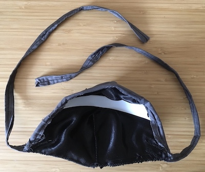
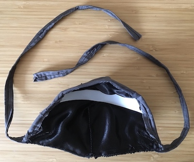
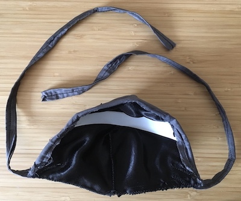

This is a modified Ragmask for higher filtration using only fabrics available on
the high street. The original Ragmask version 2.3 construction guide PDF
here (great work Loren Brichter).
This site's maintainer has been sharing "masks work" studies
on social media since Feb 9th,
and experimenting with satin filters for masks since the end of February and sharing designs since mid March
(see main site).
Front and back of mask

Features:
Easy-sew 3D shape for a tighter fit meaning far less air going around the mask
Satin liner: 2 - 4 layers depending on your lung strength and whether you're working in proximity to
possibly infected people
Plastic retainer sewn-in: This pushes out the fabric to increase breathability. See video of mask without retainer and with
retainer for comparison. See also alternate removable retainer designs.
Cotton outer (suggested 400-thread cotton from sheets from the supermarket)
Two sturdy straps that are easy to tie behind your own head if you have decent nose (variation to add two more straps if
that's not holding). There's no elastic involved, and your ears are not under strain.
Washable: You can should should wash yours each evening if you wore it that day. Hand wash is preferable, but
machine wash in a netting "laundary bag" is possible too
Ragmask Max uses a different template to the regular Ragmask and has a slightly different
construction guide (see below).
Materials
Some cotton with a high thread count for the outer layer. I cut up a bedding set from the supermarket.
Some satin - again I used a bedding set (online purchase), but that may end up being thinner satin.
If a fabric store is still open near you. This thinner satin is preferable. Duchess(e) satin is thicker
(this is what wedding dresses are made of), but it is unsuitable for use in masks as it is too hard to
breathe through even with the cupping design of this mask.
Shown above - the making of a three-layer satin filter. I have made and tried six-layer filters the
same way (cut suitable length and keep folding it) then worn then for multiple 1 to 2 hour shopping trips.
Six might be too many layers of satin, with two, three or four being more workable choices.
About this site, and my quest for improved home made facemasks:
David Powell is International Air
Transport Association's (IATA) medical adviser
and he said "forget facemasks" on a published Skype interview on Feb 9th (or so). It took me 90 mins to find
a 2008 study on "Professional and Home-Made Face Masks Reduce Exposure to Respiratory Infections among the
General Population" and post that to
Reddit.
This microsite was first published on the 28th Feb, and I've continued to promote "Masks For All"
and evolve mask designs since.
 
